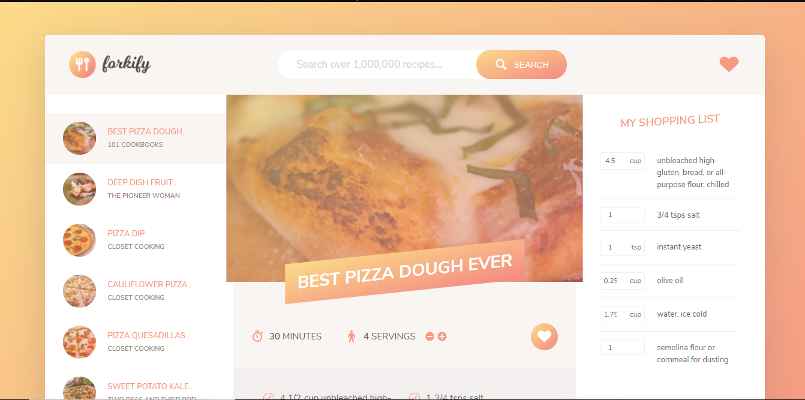

Search over 100k recipes with forkify,
this is a recipe finder web app you can instanly add ingredients
to the shopping cart. Add your favourite recipes to the
favourites list, it persist the data in the browser. Designed
using
HTML, SASS, JS,webpack and Forkify API